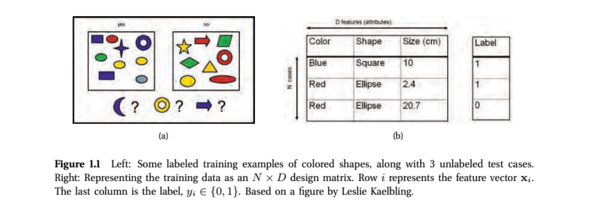
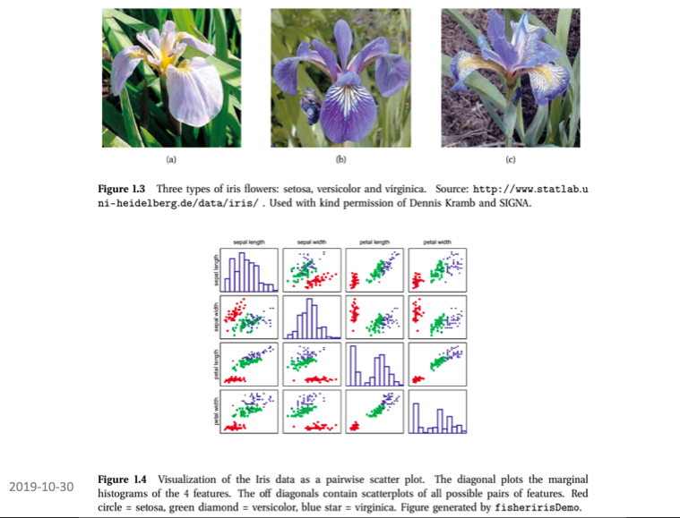
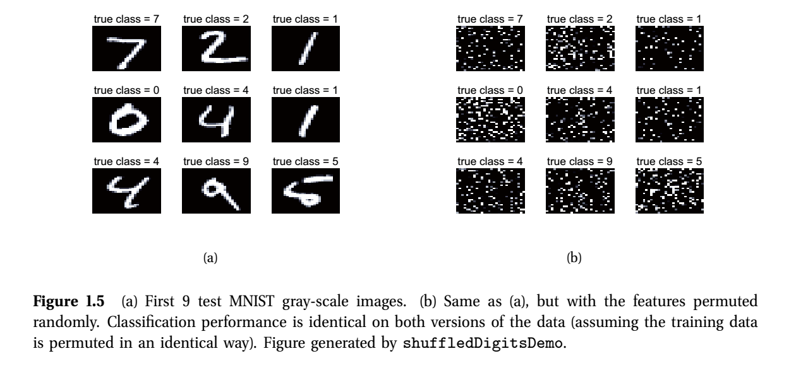
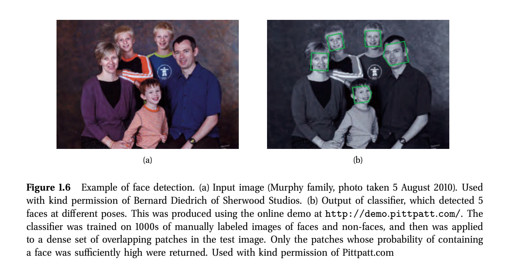
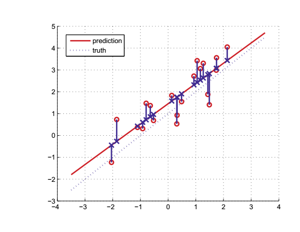
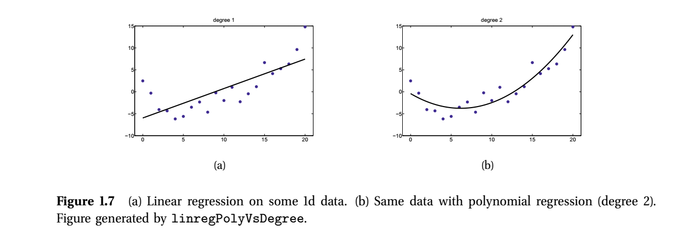

Discovering subtypes in breast cancer: unsupervised analysis
M Hallett
21/07/2020
Goals for today
Finish with sequence alignment
Some basic definitions in machine learning
Supervised vs unsupervised vs reinforcement learning
Probabilistic perspectives
k means clustering (unsuperivised)
Next class: linear models (supervised)
Global Thermonuclear War
(In RStudio, you can simply click Session/Interrupt R.)
Ti-99/4a
Supervised learning
- The goal is to learn mappings from the input variables x to the output variables y, using a training set consisting of a labelled set of input-output pairs:
| input | paired with | output |
|---|---|---|
| x[1] | → | y[1] |
| x[2] | → | y[2] |
| ••• | ••• | ••• |
| x[N] | → | y[N] |
N is the number of training samples
For example, \(x\) could be the height of \(N\) individuals, and \(y\) could correspond to their sex. Our goal might be to learn a mapping to predict sex from height.
Usually, though each observation (row) is comprised of several attributes (variables, columns).
| height | weight | IQ | education | paired with | output |
|---|---|---|---|---|---|
| x[1,1] | x[1,2] | x[1,3] | x[1,4] | → | y[1] |
| x[2,1] | x[2,2] | x[2,3] | x[2,4] | → | y[2] |
| ••• | ••• | ••• | ••• | ••• | ••• |
| x[N,1] | x[N,2] | x[N,3] | x[N,4] | → | y[N] |
Design matrix X
Height, weight, IQ, education status are referred to as features, attributes or covariates. In tibbles , we call them variables.
We often refer to this feature data as the design matrix \(X\):
| height | weight | IQ | education |
|---|---|---|---|
| x[1,1] | x[1,2] | x[1,3] | x[1,4] |
| x[2,1] | x[2,2] | x[2,3] | x[2,4] |
| ••• | ••• | ••• | ••• |
| x[N,1] | x[N,2] | x[N,3] | x[N,4] |
Different forms of supervised learning
Variable \(y\) (eg sex) is called the response variable.
It can have different types.
Categorical when possible states of \(y\) are finite. That is \(y \in C\) where \(|C|\) is a finite number. For example, \(y \in \{ 1, 2, 3 \}\) or \(y \in \{ good, bad, ugly \}\), \(y \in \{ TRUE, FALSE \}\)
When \(y\) is categorical, we say that this is a classification problem.
When \(|C| = 2\), we say it is a _binary classification problem.
When \(|C| > 2\), we say it is a multiclass classification.
Sometimes, we have ordinal response variables: categorical variables that are ordered. Eg, \(your\_grade \in \{ B, B+, A-, A, A+ \}\).
Sometimes \(y\) can take real values. Eg, \(y \in \{ -\infty : +\infty \}\), \(y\) is a temperature, \(y\) is the number of days to relapse.
When \(y\) is real, we call this a regression problem.
Supervised learning example
- The goal here is to generalize beyond the training set. That is, use the examples in the boxes of (a) and design matrix of (b) to form general rules that will allow us to classify the purple moon, yellow donut, and blue arrow.

Essential probability theory
We have our training set \(U\) consisting of mappings from the input variable \(x\) to the output variable \(y\).
If we are learning a binary classifer, the \(C\) is either \(0\) or \(1\) (good or bad, on or off).
Ideally, we would like to reason in a sound manner about
\[ Pr( y | x, U) \]
For example, \(Pr( y = {\tt bad~outcome} | x, U )\) represents the probability that a woman diagnosed with breast cancer will recur (bad outcome) given
the clinico-pathological and gene expression data for this patient in our \({\tt brca}\) dataset (this is \(x\)), and
a (hopefully large) collection of other cases of women of good and bad outcome with different atttributes (this is \(U\), the rest of our \({\tt brca}\) dataset)
Conditional probability
Notice that \[ Pr( y = {\tt bad~outcome} | x, Y ) + Pr (y = {\tt good~outcome} | x, Y ) = 1 \]
Actually we should probabily write \(Pr( y | x, U, {\bf M})\) where \(M\) is the model of how we classify \(y\) from \(x\) and \(U\). For example, via logistic regression which we will look at today.
Maximum a posterior probability (MAP)
- Recall the question from Michelle about a sort of likelihood/parsimony highbrid. MAP is a common approach; “best guess”:
- if \(Pr( y = {\tt good~outcome} | x, U) > Pr(y={\tt bad~outcome} | x, Y)\), choose good. Otherwise bad.
- Let’s revisit this puzzle with these concepts in mind.
Some real-world examples of supervised learning
- This data is available in R (\({\tt iris}\) variable). From R. Fisher. The goal is to build a classifier for the three types of irises: setosa, virginica, versicolor.

Real-world examples of supervised learning
- The features x are sepal length, sepal width, petal length, petal width (x[i, 1], x[i,2], x[i,3], x[i,4] four attributes). D is the data in the \({\tt iris}\) tibble in R. N, the number of examples in the learning set, is 150.
More examples
 
Regression
- Recall: Variable \(y\) (eg gender) is called the response variable. When \(y\) takes real values (eg age, time, temperature), we call this problem a regression.
 
Unsupervised learning
- Here the training set consists only of the inputs \(x\) but no output variables \(y\).
| height | weight | IQ | education | paired with | output |
|---|---|---|---|---|---|
| x[1,1] | x[1,2] | x[1,3] | x[1,4] | → | y[1] |
| x[2,1] | x[2,2] | x[2,3] | x[2,4] | → | y[2] |
| ••• | ••• | ••• | ••• | ••• | ••• |
| x[N,1] | x[N,2] | x[N,3] | x[N,4] | → | y[N] |
The goal is to find “interesting” patterns in the data. This is sometimes called knowledge discovery or data mining.
We aren’t told what kind of patterns nor how to evaluate the patterns.
Seems a bit open ended, no?
It’s best to think of this as you being a very patient open minded parent.
Perhaps you are speaking with your teenage daughter who is teen-splaining a political issue for your benefit by randomly uttering statements about the topic.
You listen patiently to see if there is an overall pattern emerging from the stream of information.
Unsupervised learning
- The unsupervised approach.
In e-commerce, it is common to cluster users into groups, based on their purchasing or web-surfing behavior, and then to send customized targeted advertising to each group (Berkhin 2006).
In astronomy, the autoclass system (Cheeseman et al. 1988) discovered a new type of star, based on clustering astrophysical measurements.
In biology, many examples including with protein or gene expression data and DNA-level sequence motif discovery.
We will look at the k-means approach for clustering data shortly.
Reinforcement learning
It is the subject of much current research.
The idea is kind of like conditional learning in psychology.
Your train your computer program to perform certain tasks (eg to drive you to work) by rewarding or punishing it.
You can ask how do you punish or reward a computer … you can’t … it’s just flowery language to describe how your program makes decisions based on trying out different alternaives.
For example, if you are building a computerized wheelchair to go down stairs, Your program might start by lurching forward at the top of the stairss. It gets -10 points for rolling end over end down the stairs.
Your program would start again and try rolling very slowly towards. It might make it down 1 stair before falling, so it would get -5 points.
- Eventually your program learns to roll forward and backward in tiny increments until it gets to the bottom.
Points of reflection
BIOL 480
© M Hallett, 2020 Western University